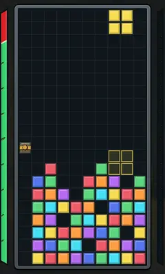
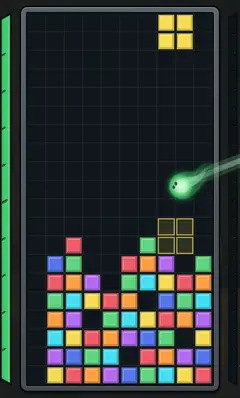
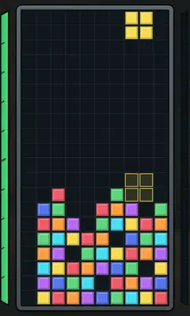
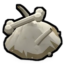
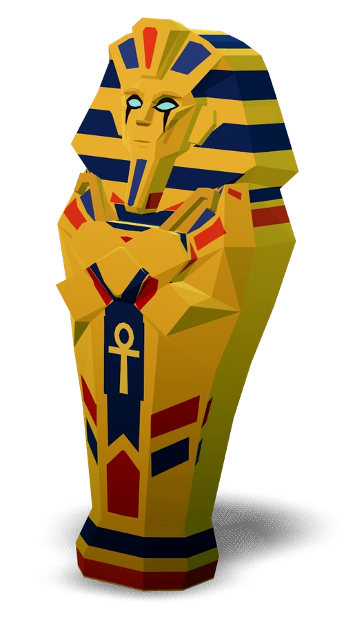

Possessed Sarcophagus
Possessed Sarcophagus is a boss met in Pyramids. A gilded coffin with a spirit inside. It seals your deepest well with a stone, sends spirits at your tower and raises mummies to take your hits.
Attacks
| Attack | Style | What it does | On the board |
|---|---|---|---|
| Entomb | Melee | Seals your deepest well with a stone. Clear the stone's row and your next hit does double. |  |
| Spirits | Magic | Three spirits each burst a block out of your stack and hit you. Fill the holes they leave. |  |
| Raise The Dead | Melee | Raises a Mummy to guard him, and it takes your next hit. Break it with a small clear and save the big one. |  |
Each clip is the real fight's board, filmed from the game. It plays once it scrolls into view.
The game's advice: Clear the row his stone sits in and your next hit does double. When he raises a Mummy, break it with a small clear and save the big one.
Weakness: spins hit it 10% harder.
Strategy
How to beat Possessed Sarcophagus: gear, skills and what to do on the board, in a player's words.
Locations
- Pyramids, in the Red Desert Story (fight 4 of the road)
- the Endless Dungeon's Pyramids: a round boss; the warden its chest follows
Combat stats
| Where | Health | Hit | Attacks every | Experience |
|---|---|---|---|---|
| Red Desert Story | 243 | 13–22 | 7s | 480 |
| Endless Dungeon, fight 1 | 365 | 20–34 | 4.67s | 1,200 |
| Endless Dungeon, fight 11 | 413 | 21–35 | 4.38s | 1,296 |
| Endless Dungeon, fight 21 | 486 | 23–39 | 4s | 1,440 |
| Endless Dungeon, fight 41 | 632 | 26–44 | 3.5s | 1,778 |
| Dark Endless Dungeon, fight 1 | 486 | 26–44 | 3.5s | 1,920 |
| Dark Endless Dungeon, fight 11 | 535 | 27–46 | 3.5s | 2,016 |
| Dark Endless Dungeon, fight 21 | 608 | 29–49 | 3.5s | 2,160 |
| Dark Endless Dungeon, fight 41 | 753 | 33–56 | 3.5s | 2,498 |
Hit is the range before your Armor takes its share. In the Endless Dungeon and its Dark an enemy grows tougher with every round of fights; champions and omens change it further. A kill from fight 25 on, in Onslaught, pays 50 experience on top.
Drops
Each kill rolls its table twice in the Red Desert Story, twice in the Endless Dungeon and three times in its Dark. Every row is rolled on its own, so a kill can pay several.
| Item | Quantity | Rarity | Log |
|---|---|---|---|
 Gold Coin Gold Coin | 150–260 | 60% | |
 Flax Fabric Flax Fabric | 3–6 | 1/2 | |
 Bone Meal | 2–4 | 1/5 | |
 Mithril Ingot Mithril Ingot | 1–2 | 1/5 | |
 Minor Healing Potion Minor Healing Potion | 1–2 | 1/5 | |
 Nettle Fabric Nettle Fabric | 1–3 | 15% | |
 Adamantite Ingot Adamantite Ingot | 1–2 | 1/20 | |
 Gilded Draught Gilded Draught | 1 | 1/25 | |
 Bandage Roll Bandage Roll | 1 | 1/25 | |
 Orichalcum Ore Orichalcum Ore | 1–2 | 1/25 | ✓ |
 Darkwood Log Darkwood Log | 1–2 | 1/100 | ✓ |
 Magic Ring Magic Ring | 1 | 1/33 | ✓ |
 Treasure Seal Treasure Seal | 1 | 1/40 | ✓ |
 Lotus Leaves Lotus Leaves | 1–2 | 1/200 | ✓ |
 Magic Chain Magic Chain | 1 | 1/64 | |
 Nettle Hat Nettle Hat | 1 | 1/100 | |
 Nettle Robe Nettle Robe | 1 | 1/100 | |
 Trapped Spirit Trapped Spirit | 1 | 1/99 | ✓ |
 Orichalcum Ingot Orichalcum Ingot | 1 | 1/400 | ✓ |
 Darkwood Plank Darkwood Plank | 1 | 1/1,667 | ✓ |
 Lotus Cloth Lotus Cloth | 1 | 1/1,667 | ✓ |
 Ancient Coke Ancient Coke | 1 | 1/400 | ✓ |
Every kill also rolls
| Item | Quantity | Rarity | Notes |
|---|---|---|---|
| Rare Drop table (The Red Desert) | — | 1/16 | Once a kill, whatever the mode |
 Respec Orb Respec Orb | 1 | 1/1,600 | A run's first kill; rises each kill to 1/533 from the 50th |
 Little Sarcophagus Little Sarcophagus | 1 | 1/500 | Pet, one of each |
 Gilded Ornament Kit Gilded Ornament Kit | 1 | 1/500,000 | Every kill everywhere |
Rare Drop table (The Red Desert)
One kill in 16 rolls this list once, apart from the enemy's own table. Rare Drops never count toward the Collection Log.
| Item | Quantity | Rarity |
|---|---|---|
| Gold Coin | 300–800 | 1/105 |
 Coal Coal | 40–80 | 1/105 |
| Mithril Ingot | 4–8 | 1/99 |
 Rugged Hide Rugged Hide | 2–4 | 1/131 |
| Adamantite Ingot | 2–3 | 1/131 |
 Ipe Plank Ipe Plank | 2–3 | 1/158 |
| Nettle Fabric | 2–3 | 1/197 |
 Duskhide Duskhide | 1 | 1/394 |
| Magic Ring | 1 | 1/788 |
| Magic Chain | 1 | 1/788 |
| Treasure Seal | 1 | 1/1,576 |
| Orichalcum Ingot | 1 | 1/1,576 |
| Darkwood Plank | 1 | 1/6,304 |
| Lotus Cloth | 1 | 1/6,304 |
Collection Log
Possessed Sarcophagus has a page under ENEMIES in the Collection Log, in its BOSSES section. It lists:
- Orichalcum Ore
- Darkwood Log
- Magic Ring
- Treasure Seal
- Lotus Leaves
- Trapped Spirit
- Orichalcum Ingot
- Darkwood Plank
- Lotus Cloth
- Ancient Coke
In the game each slot stays hidden until it drops for you.
Gallery


Trivia
Design notes and anything else worth knowing.
Changes
What changed for Possessed Sarcophagus, update by update.
| Enemies | |
|---|---|
| Greenshore Story | Zombie · Slime · Squirrel · Cyclops · Oak Entling · Bandit · Bandit King · Super Zombie · Punchy · Shooty · Bernie · Bandit Elite · Cultist · Cult Leader |
| Red Desert: Dust Bowl | Sand Zombie · Wormling · Desert Worm |
| Red Desert: Sand Storm | Raider · Scrap Warlord |
| Red Desert: Pyramids | Sand Zombie · Mummy · Possessed Sarcophagus |
| Red Desert: Sand Cave | Rockling · Cave Spider · Sandstone Golem |
| Red Desert: Research Station | Sand Veil Cultist · Lesser Cult Leader · The Old Man |
| Red Desert: Hellish Desert | The Unbound |
| Elsewhere | Garbage Man · Slime King |